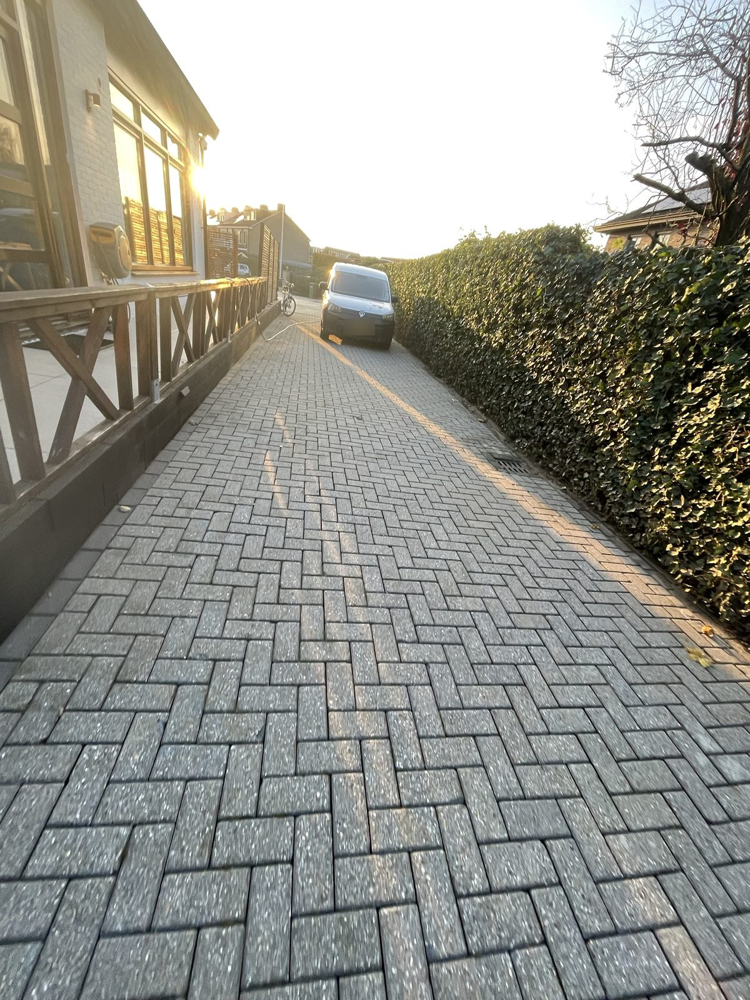
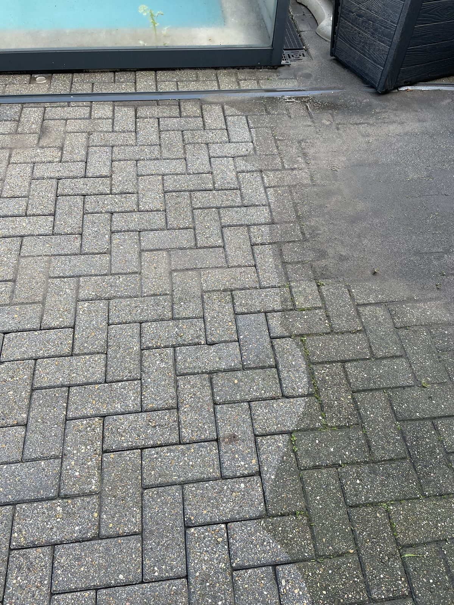
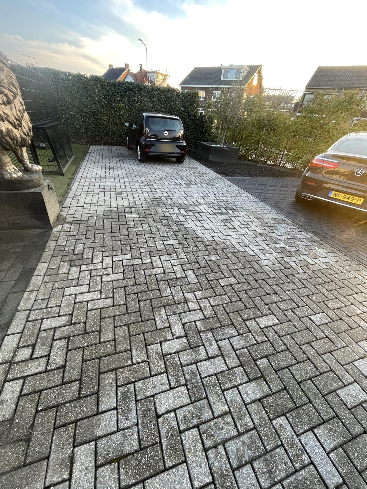

Yüksek basınçlı yıkama
Zemin döşemeden ve diğer uygun zeminlerden kir, yosun ve yabani otu temizleme; işe ve malzemeye göre soğuk veya sıcak suyla.
Sizin için neler yapıyoruz
Dordrecht, Hendrik-Ido-Ambacht, Zwijndrecht ve Drechtsteden'de çalışıyoruz.
Derzlerdeki yosun ve yabani ot
Derzler yeniden açık ve temiz olur; zemin bakımlı görünür.
Teras, yol ve araç yolu
Uygun zeminlerdeki kir ve yeşil tabakayı temizleme.
Soğuk veya sıcak su
Soğuk mu sıcak mı su kullanacağımıza işe ve malzemeye göre karar veririz.
Derz bakımı
Temizlikten sonra derzler uygun derz kumuyla doldurulabilir.
Yaklaşımımız
Önce zemini ve kirliliği değerlendirir, tekniği ve basıncı ona göre seçeriz. İş bitince derzlerin yeniden doldurulmasının yararlı olup olmadığını görüşürüz.
Bilmekte fayda var
- Temizlik yosunu, yabani otu ve kiri giderir. Taşları yeni hâle getirmez: renk farkları ve aşınma görünür kalır.
- Yabani otlar zamanla geri gelebilir. İyi doldurulmuş derzler ve düzenli bakım bunu azaltır.
- Her zemin yüksek basınca dayanmaz. Bunu önceden değerlendiririz.
İşlerimizden örnekler

İşlerimizden
Yüksek basınçlı temizlik uygulamada
Temizlediğimiz bir araç yolu ve patika fotoğrafları. Temizliğin sonucu zemine ve kararlaştırılan işe bağlıdır.



Sık sorulan sorular
Yüksek basınç zeminime zarar verir mi?
Çok yüksek basınç derzleri açabilir veya yumuşak malzemeye zarar verebilir. Bu yüzden basınç ve tekniği malzemeye ve derzlerin durumuna göre seçeriz.
Nasıl bir sonuç bekleyebilirim?
Yosun, yabani ot ve kir giderilir. Tamamen düzgün, yeni bir görünüm vaat etmiyoruz.
Durumunuza özel bir teklif
Ne yaptırmak istediğinizi anlatın ve mümkünse fotoğraf gönderin. Bahçenize ve işinize uygun bir fiyat teklifi alırsınız. Fiyata nasıl ulaştığımızı şurada da okuyabilirsiniz: Fiyatlar ve teklifler.